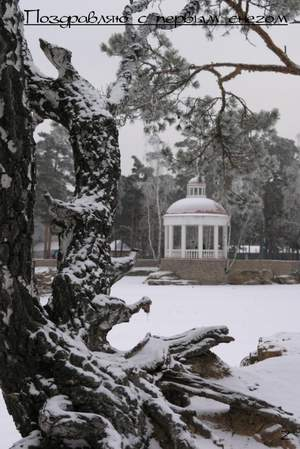
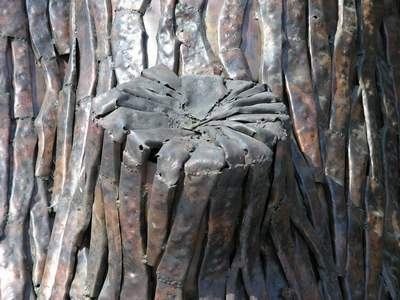

Игра №20
Начало: 18-02-2006 в 18:00:00
Тип игры: Закрытая
Описание:
Принадлежности: плащ, шляпа

Тип игры: Закрытая
Описание:
Принадлежности: плащ, шляпа
Уровень 1.
Задание для координаторов :
зайти по ссылке http://www.wimp.com/peoplelove/ что изображено в пятом сюжете?
1.
2.
3.
схтелефон
Задание для полевиков :
Я спрятался в четвертом из шести домов, принадлежащих ей .. Сладкий мой. Полюби меня ... Позови меня... Найди меня ... Сканируй меня... Сертифицируй меня... И первые четыре знака после РОСС RU оставят неизгладимый след в твоей душе. код: сх + буквы и цифры
1.
Ты еще не полюбил меня? Потрудись. Я утолю твою жажду.
2.
Молния на улице Труда, сертификат на сок «Любимый»
3.
cxпр71
Уровень 2.
Задание для координаторов :
Название этой оперы носит имя главной героини. Написана она была итальянским композитором, имя которого такое же, как и второе имя отца Казановы
1.
2.
3.
схаида
Задание для полевиков :
Когда-то она ждала меня .. Сейчас она ждет тебя. Она всегда готовится к свиданию. Она хочет быть самой красивой. Спеши к ней на улицу музыкантов, художников и влюбленных. Не забудь одеть шляпу и плащ, а так же выучить по дороге к ней стихотворение А.С. Пушкина «Я вас любил». Прибыв на место, встань перед ней на колено, прижми шляпу к груди и прочти поэтичное признание. После этого ее верный слуга вручит тебе ответ. (Признание читается наизусть и с выражением) ПОДСКАЗОК НЕТ и НЕ БУДЕТ ;) код: сх + буквы и цифры
1.
-
2.
Ехай на Арбат, возле барышни с зонтом, у зеркала, тебя ждет агент с кодом .. не забудь выучить стих по дороге.
3.
сх99а7
Уровень 3.
Задание :
В беседе с нею, сидя у пруда, Я стих читал и возносился к небу. код: сх + буквы и цифры
1.
Я, как космический странник, искал своего берега и, наконец, нашел его среди деревьев. В беседке, я и увидел ее.
2.

код на камнях
3.
сх1х09
Уровень 4.
Задание :
Дорогие потомки. Пожалуй, свой главный след я оставил в этом доме. Принадлежал он всегда Сергею, а прописан там был Юрик. Сколько башмаков я стоптал и штанов поистер, по дороге туда .. Именно там я увидел плод рабочего и крестьянки, а рядом я датировал свой след. код: сх + цифры
1.
Провожая его в первый полет, я начал свой отсчет на 8 секунд раньше.
2.
Моим следом стала дата рождения сына в роддоме при ГКБ №10.
3.
сх70805
Уровень 5.
Задание :
Слегка захмелев, я вновь вспомнил о ней. Несмотря на железную выдержку, слеза пробила меня. Бог даст, свидимся,- подумал я. И вдруг мое внимание привлекло объявление. Да! Я нашел то, что искал: в объявлении было зашифровано место свидания. Это повлекло за собой большие последствия код: сх + слово
1.
Наше свидание состоялось в парке, где днем гуляют дети, а вечером металлурги, вокруг искусственного источника.
2.
В последствии, места свиданий мы зашифровывали в объявлениях, оставленных на специальной доске, установленной в парке «Металлург» у фонтана.
3.
схуфонтана
Уровень 6.
Задание :

А напротив в солнечном цвете вы найдете мой след во времени. код: сх + слово
1.
Мы красиво проводили время и получали максимум удовольствия.
2.
В сфере влюбленные часов не наблюдают, даже если они висят напротив.
3.
схbeautytime
Уровень 7.
Задание для полевиков :
Наворовавшись, наигравшись и поймав удачу за хвост, я зашел в харчевню напротив. Над крыльцом этой харчевни я и оставил след своих любовных похождений. код: сх + слово
1.
Известное воровское общество собиралось у Шурочки и заказывало свою любимую песню: «Как-то шли на дело, выпить захотелось, Мы зашли в шикарный ресторан…»
2.
Следовательно, ищите название этой харчевни. Фортуна Вам улыбнется.
3.
схшурымуры
Задание для координаторов :
Год рождения Казанова Джакомо Джованни и сколько ему было лет, когда он умер
1.
2.
3.
сх172573
Уровень 8.
Задание :
Как я мог решиться на такой акт… Я был просто молод, как Павка Корчагин, кучеряв, пока не облучился, а ее имя оставило неизгладимый след в моей биографии. код: сх + слово
1.
Здесь мы и зарегистрировали свои отношения.
2.
Ее имя .. оно всегда рядом.
3.
схнастенька
Уровень 9.
Задание для полевиков :
Это была уже .. м-м-м .. пятая дорога по пути к ней. Вот уже в тридцатый раз я элементарно химичил, чтобы найти то, что искал. Я бы умер от счастья, чтобы этот цветок принадлежал мне. код: сх + буквы и цифры
1.
Лучше умереть, стать евнухом, чем знать, что этот цветок принадлежит другим.
2.
Для тех, кто не успел: киоск «Цветы» при въезде на кладбище «Успенское».
3.
сх76т0
Задание для координаторов :
В какой венецианской тюрьме просидел Казанова, пока не сбежал оттуда?
1.
2.
3.
схпьомби
Уровень 10.
Задание :
Сюда прибывают самые страстные любовники. Любовь как трактор уложила меня наповал. В 13 раз она пристолбила меня к этому месту. код: сх + буквы и цифры
1.
В четвертый раз я преподнес Венере целый букет.
2.
Оказавшись уже у парадного входа, меня опять потянуло налево .. мы прижались к забору ..
3.
сх13к3